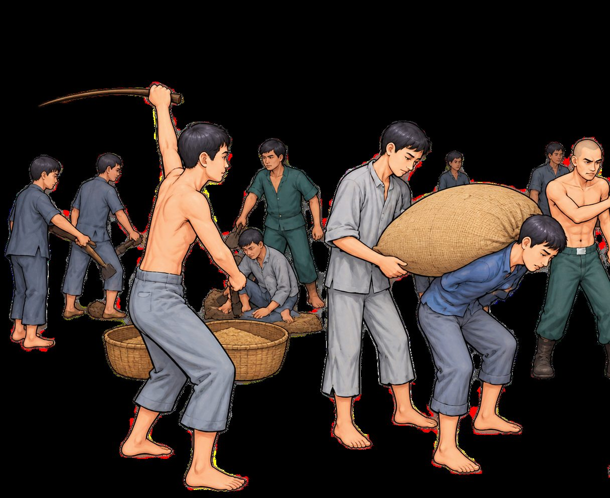
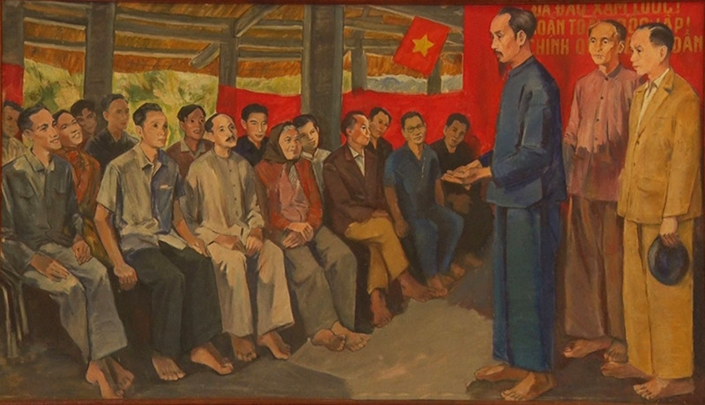
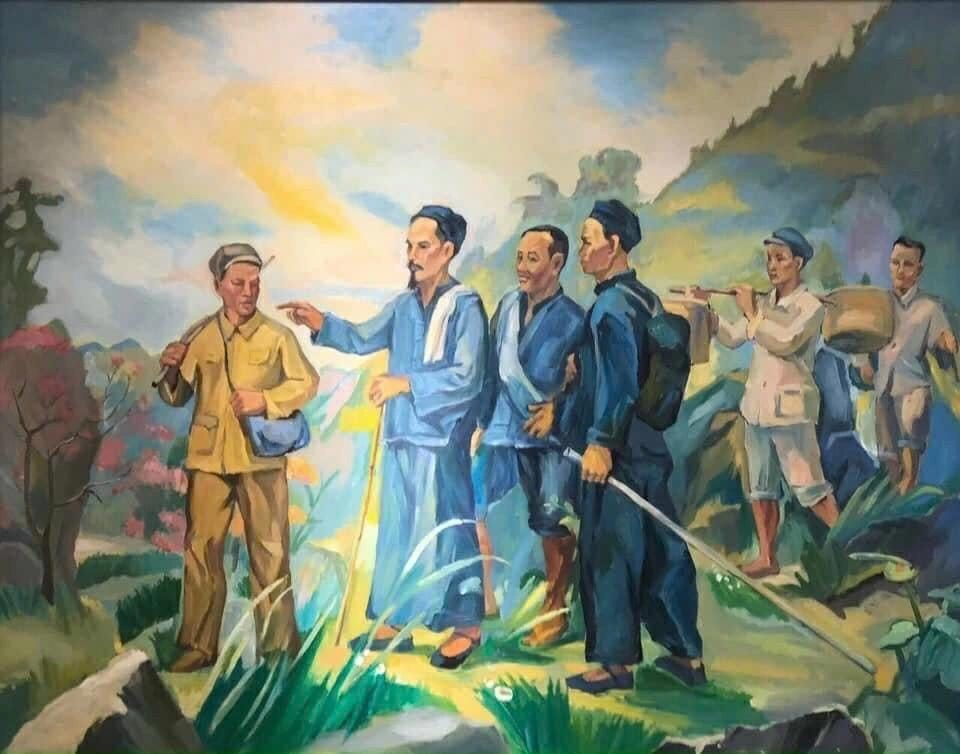
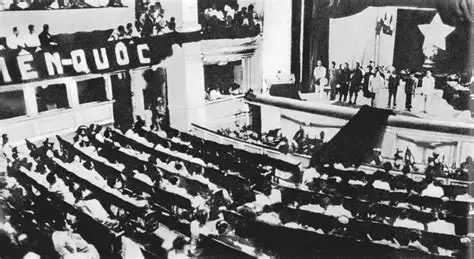
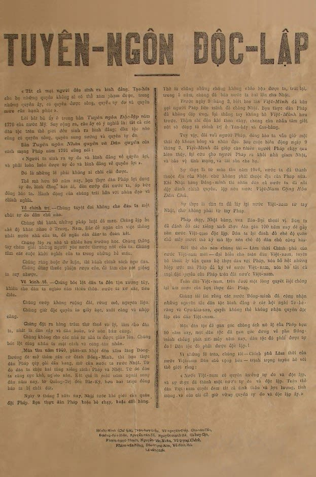
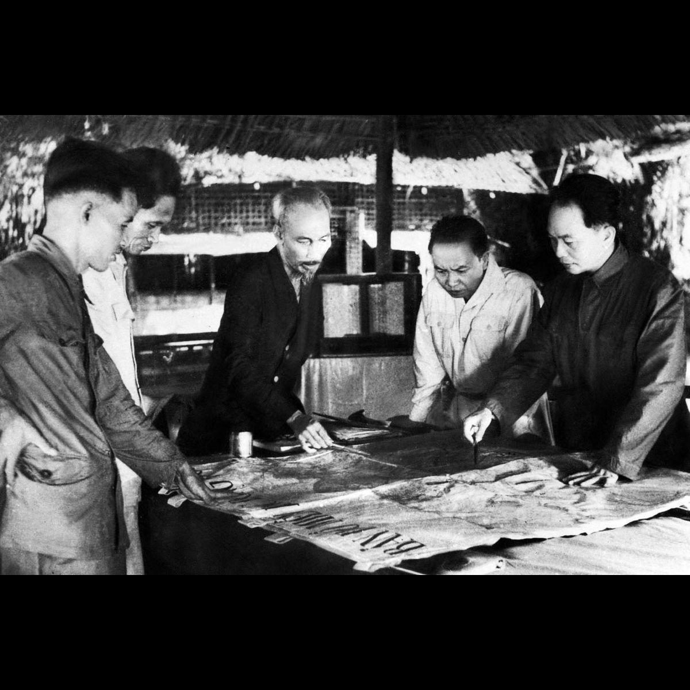
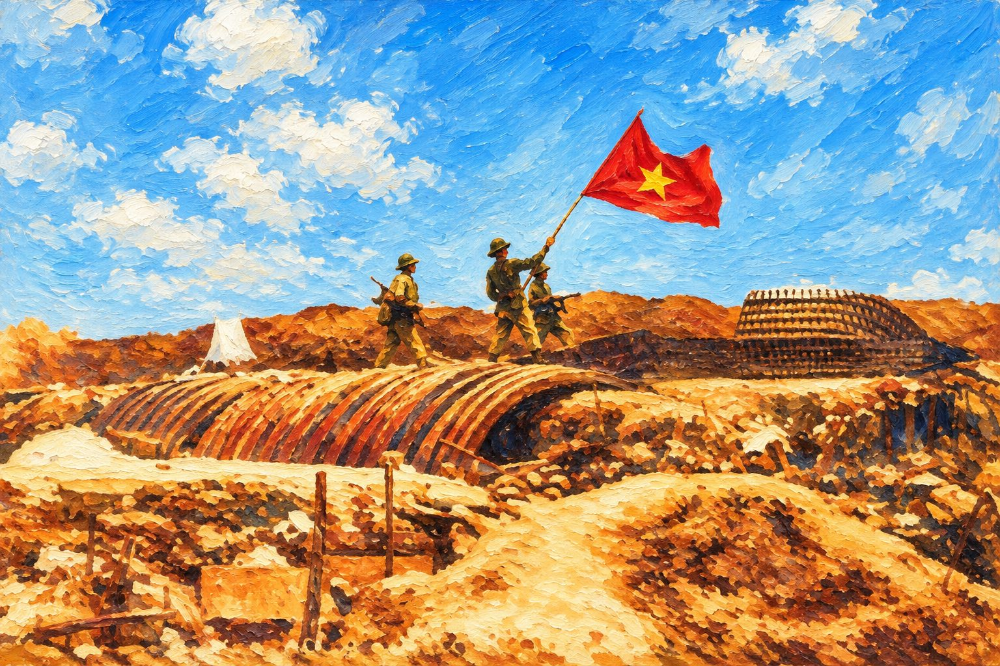
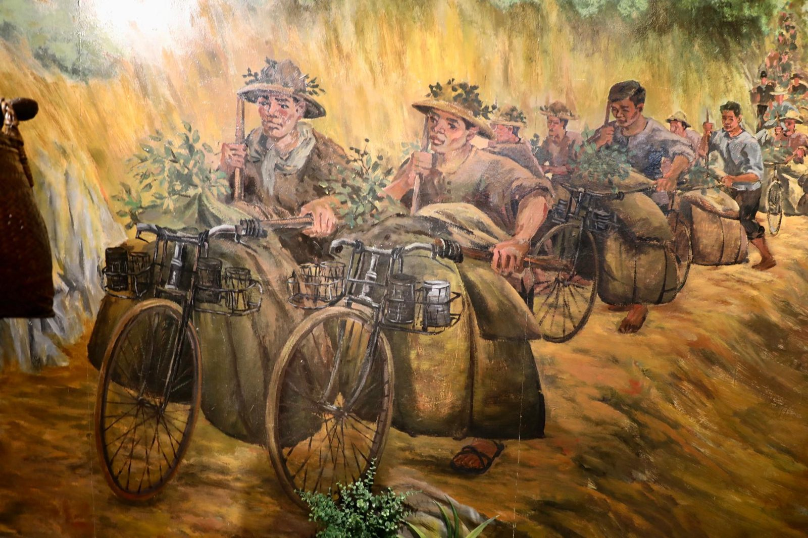
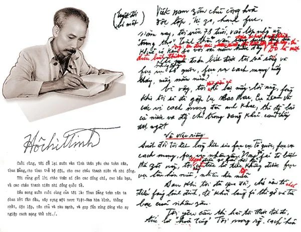

09
Trang 9
Nguồn tư liệu và hình ảnh tham khảo
Danh mục nguồn được chia theo 8 mốc lịch sử, kèm phân loại từng hình ảnh trong triển lãm.
Lưu ý minh bạch về tư liệu
- Các liên kết bên dưới lấy từ tài liệu “Danh mục nguồn hình ảnh tham khảo”; tài liệu nói rõ đây là các trang bài viết/kho tư liệu để tra cứu, không phải đường dẫn tải trực tiếp từng ảnh.
- 22 hình ảnh trong triển lãm được lấy từ chính file Word nội dung; tài liệu không ghi tác giả hay đường dẫn cho từng hình. Những chỗ này được đánh dấu “cần bổ sung”, không tự suy đoán.
Ảnh tư liệu ảnh chụp/bản quét tài liệuTranh minh họa tranh vẽTranh AI / minh họa theo mẫu ghi nguồn của tài liệu
01
Tiểu sử Chủ tịch Hồ Chí Minh
Nguồn nội dung / tư liệu tham khảo
thphamvanchieu.hcm.edu.vn
Tư liệu ảnh Chủ tịch Hồ Chí Minh từ năm 1930–1945
https://thphamvanchieu.hcm.edu.vn/tu-lieu-anh/tu-lieu-anh-chu-tich-ho-chi-minh-tu-nam-1930-1945/ctmb/139856/1254380
Hồ Chí Minh Online
Tư liệu ảnh về Pác Bó, hang Cốc Bó, bút tích và hiện vật
https://hochiminh.online/tu-lieu-anh-chu-tich-ho-chi-minh-tu-nam-1930-1945/
Thư viện Trung tâm, ĐHQG TP.HCM
Kho tư liệu về Chủ tịch Hồ Chí Minh
https://tulieuhochiminh.vnulib.edu.vn/
Hình ảnh trong mốc này
Tranh AI / minh họaNơi Bác sinh
Tranh minh họa được tạo bằng AI, tham khảo tư liệu từ sưu tầm mạng (theo mẫu ghi nguồn của tài liệu). Chưa xác minh tác giả, công cụ và đường dẫn nguồn – cần bổ sung.

Tranh AI / minh họaNỗi khổ của đồng bào
Tranh minh họa được tạo bằng AI, tham khảo tư liệu từ sưu tầm mạng (theo mẫu ghi nguồn của tài liệu). Chưa xác minh tác giả, công cụ và đường dẫn nguồn – cần bổ sung.
02
Hành trình ra đi tìm đường cứu nước
Nguồn nội dung / tư liệu tham khảo
hochiminh.nssc.gov.vn
Bến Nhà Rồng – Di tích thương cảng lịch sử và chuyến hải trình năm 1911
https://hochiminh.nssc.gov.vn/ben-nha-rong/
Thư viện ĐHQG TP.HCM
Bến Nhà Rồng, nơi Nguyễn Tất Thành ra đi tìm đường cứu nước
http://tulieuhochiminh.vnulib.edu.vn/handle/VNUHCM/13672
Quốc hội
Chủ tịch Hồ Chí Minh – Hành trình tìm đường cứu nước
https://quochoi.vn/tintuc/Pages/tin-hoat-dong-cua-quoc-hoi.aspx?ItemID=56338
Báo Điện tử Chính phủ
Kỷ niệm 100 năm Ngày Bác Hồ ra đi tìm đường cứu nước
https://baochinhphu.vn/ky-niem-100-nam-ngay-bac-ho-ra-di-tim-duong-cuu-nuoc-5-6-1911-5-6-2011-nguoi-tao-nen-buoc-ngoat-lich-su-cho-cach-mang-viet-nam-10281639.htm
Hình ảnh trong mốc này

Tranh AI / minh họaBác ra lên tàu tìm đường cứu nước
Tranh minh họa được tạo bằng AI, tham khảo tư liệu từ sưu tầm mạng (theo mẫu ghi nguồn của tài liệu). Chưa xác minh tác giả, công cụ và đường dẫn nguồn – cần bổ sung.
Tranh AI / minh họaBến Nhà Rồng trước khi Bác tìm đường cứu nước
Tranh minh họa được tạo bằng AI, tham khảo tư liệu từ sưu tầm mạng (theo mẫu ghi nguồn của tài liệu). Chưa xác minh tác giả, công cụ và đường dẫn nguồn – cần bổ sung.
Tranh AI / minh họaCon tàu Bác ra đi tìm đường cứu nước
Tranh minh họa được tạo bằng AI, tham khảo tư liệu từ sưu tầm mạng (theo mẫu ghi nguồn của tài liệu). Chưa xác minh tác giả, công cụ và đường dẫn nguồn – cần bổ sung.

Tranh AI / minh họaNguyễn Ái Quốc tại Hội nghị Versailles - Pháp
Tranh minh họa được tạo bằng AI, tham khảo tư liệu từ sưu tầm mạng (theo mẫu ghi nguồn của tài liệu). Chưa xác minh tác giả, công cụ và đường dẫn nguồn – cần bổ sung.

Tranh AI / minh họaNguyễn Ái Quốc với hoạt động báo chí cách mạng
Tranh minh họa được tạo bằng AI, tham khảo tư liệu từ sưu tầm mạng (theo mẫu ghi nguồn của tài liệu). Chưa xác minh tác giả, công cụ và đường dẫn nguồn – cần bổ sung.

Ảnh tư liệuSách “Đường Kách mệnh”
Ảnh nhúng trong tài liệu nội dung; chưa xác định cơ quan/tác giả và đường dẫn trực tiếp – cần bổ sung. Hình bìa sách; chưa rõ là ảnh chụp hay bản quét, chưa rõ đơn vị lưu giữ.
03
Đảng Cộng sản Việt Nam ra đời
Nguồn nội dung / tư liệu tham khảo
thphamvanchieu.hcm.edu.vn
Tư liệu ảnh Chủ tịch Hồ Chí Minh từ năm 1930–1945
https://thphamvanchieu.hcm.edu.vn/tu-lieu-anh/tu-lieu-anh-chu-tich-ho-chi-minh-tu-nam-1930-1945/ctmb/139856/1254380
Thư viện Trung tâm, ĐHQG TP.HCM
Kho tư liệu về Chủ tịch Hồ Chí Minh
https://tulieuhochiminh.vnulib.edu.vn/
Hồ Chí Minh Online
Tư liệu ảnh Hồ Chí Minh
https://hochiminh.online/tu-lieu-anh-chu-tich-ho-chi-minh-tu-nam-1930-1945/
Hình ảnh trong mốc này

Tranh AI / minh họaHồng Kông 1931
Tranh minh họa được tạo bằng AI, tham khảo tư liệu từ sưu tầm mạng (theo mẫu ghi nguồn của tài liệu). Chưa xác minh tác giả, công cụ và đường dẫn nguồn – cần bổ sung.

Tranh minh họaHội nghị thành lập Đảng Cộng sản Việt Nam năm 1930
Tranh minh họa/tranh vẽ nhúng trong tài liệu nội dung; chưa rõ tác giả, cơ quan sở hữu và đường dẫn – cần bổ sung. Chú thích gốc trong tài liệu: “Ảnh: Tư liệu/TTXVN phát”. Hình có dấu hiệu là tranh vẽ chứ không phải ảnh chụp, cần kiểm tra lại.
04
Về nước lãnh đạo cách mạng Việt Nam
Nguồn nội dung / tư liệu tham khảo
thphamvanchieu.hcm.edu.vn
Tư liệu ảnh Chủ tịch Hồ Chí Minh từ năm 1930–1945 – có hình ảnh Pác Bó, hang Cốc Bó, suối Lê-nin, lán Khuổi Nặm
https://thphamvanchieu.hcm.edu.vn/tu-lieu-anh/tu-lieu-anh-chu-tich-ho-chi-minh-tu-nam-1930-1945/ctmb/139856/1254380
mocay.vinhlong.dcs.vn
Tư liệu ảnh Pác Bó, hiện vật và tài liệu cách mạng
https://mocay.vinhlong.dcs.vn/tu-lieu-anh-chu-tich-ho-chi-minh-tu-nam-1930---1945-tap-1-1003554.ngn
Hồ Chí Minh Online
Tư liệu ảnh Hồ Chí Minh
https://hochiminh.online/tu-lieu-anh-chu-tich-ho-chi-minh-tu-nam-1930-1945/
Hình ảnh trong mốc này

Tranh minh họaBác Hồ bên suối Lê-nin
Tranh minh họa/tranh vẽ nhúng trong tài liệu nội dung; chưa rõ tác giả, cơ quan sở hữu và đường dẫn – cần bổ sung.

Tranh minh họaĐình Tân Trào – Chuẩn bị Tổng khởi nghĩa
Tranh minh họa/tranh vẽ nhúng trong tài liệu nội dung; chưa rõ tác giả, cơ quan sở hữu và đường dẫn – cần bổ sung.

Tranh minh họaPác Bó – Ngày Người trở về Tổ quốc
Tranh minh họa/tranh vẽ nhúng trong tài liệu nội dung; chưa rõ tác giả, cơ quan sở hữu và đường dẫn – cần bổ sung.
05
Nước Việt Nam Dân chủ Cộng hòa ra đời
Nguồn nội dung / tư liệu tham khảo
Báo Điện tử Chính phủ
Ngày này 69 năm trước – Việt Nam độc lập (có ảnh Bác Hồ đọc Tuyên ngôn Độc lập)
https://baochinhphu.vn/ngay-nay-69-nam-truoc-viet-nam-doc-lap-102169049.htm
Báo Điện tử Chính phủ
Tiếng Cha già xen lẫn tiếng hoan hô
https://baochinhphu.vn/tieng-cha-gia-xen-lan-tieng-hoan-ho-102101210.htm
Báo Điện tử Chính phủ
Trưng bày đặc biệt “Ngày độc lập 2/9”
https://baochinhphu.vn/trung-bay-dac-biet-ngay-doc-lap-2-9-102277739.htm
Báo Điện tử Chính phủ
Tư liệu ảnh những ngày tháng 8/1945 hào hùng
https://baochinhphu.vn/nho-nhung-ngay-thang-8-1945-hao-hung-qua-anh-tu-lieu-102260226.htm
Hình ảnh trong mốc này

Tranh AI / minh họaBác đọc Tuyên ngôn Độc lập
Tranh minh họa được tạo bằng AI, tham khảo tư liệu từ sưu tầm mạng (theo mẫu ghi nguồn của tài liệu). Chưa xác minh tác giả, công cụ và đường dẫn nguồn – cần bổ sung.

Ảnh tư liệuQuốc hội khóa I – Chính quyền của Nhân dân
Ảnh nhúng trong tài liệu nội dung; chưa xác định cơ quan/tác giả và đường dẫn trực tiếp – cần bổ sung.

Ảnh tư liệuTuyên ngôn Độc lập
Ảnh nhúng trong tài liệu nội dung; chưa xác định cơ quan/tác giả và đường dẫn trực tiếp – cần bổ sung. Hình bản in/tờ in “Tuyên ngôn Độc lập”.
06
Chiến thắng Điện Biên Phủ lịch sử
Nguồn nội dung / tư liệu tham khảo
Báo Quân đội nhân dân
Triệu Đại – Nhiếp ảnh gia của chiến trường Điện Biên Phủ
https://www.qdnd.vn/quoc-phong-an-ninh/chien-thang-dien-bien-phu-moc-son-lich-su/ky-vat-va-ky-uc/trieu-dai-nhiep-anh-gia-cua-chien-truong-dien-bien-phu-774664
Báo Quân đội nhân dân
Vận dụng linh hoạt chiến thuật trong Chiến dịch Điện Biên Phủ
https://www.qdnd.vn/quoc-phong-an-ninh/nghe-thuat-quan-su-vn/van-dung-linh-hoat-cac-hinh-thuc-chien-thuat-trong-chien-dich-dien-bien-phu-727266
Báo Quân đội nhân dân
Chiến công của Đại đoàn 312 trong Chiến dịch Điện Biên Phủ
https://www.qdnd.vn/quoc-phong-an-ninh/chien-thang-dien-bien-phu-moc-son-lich-su/dien-bien-chien-dich/chien-cong-cua-dai-doan-312-trong-chien-dich-dien-bien-phu-771683
Hình ảnh trong mốc này

Ảnh tư liệuChủ tịch Hồ Chí Minh và các đồng chí trong Ban Thường vụ Trung ương Đảng họp quyết định mở Chiến cuộc Đông Xuân 1953-…
Ảnh nhúng trong tài liệu nội dung; chưa xác định cơ quan/tác giả và đường dẫn trực tiếp – cần bổ sung. Chú thích gốc: “Ảnh tư liệu”; chưa ghi cơ quan lưu giữ.

Tranh minh họaNgày 7 tháng 5 năm 1954, quân ta toàn thắng ở Điện Biên Phủ. Lá cờ quyết chiến quyết thắng của Chủ tịch Hồ Chí Minh t…
Tranh minh họa/tranh vẽ nhúng trong tài liệu nội dung; chưa rõ tác giả, cơ quan sở hữu và đường dẫn – cần bổ sung. Chú thích gốc: “Ảnh tư liệu”. Hình có dấu hiệu là tranh minh họa chứ không phải ảnh chụp, cần kiểm tra lại.

Tranh minh họaĐưa pháo vào trận địa Điện Biên Phủ
Tranh minh họa/tranh vẽ nhúng trong tài liệu nội dung; chưa rõ tác giả, cơ quan sở hữu và đường dẫn – cần bổ sung.

Tranh minh họaHậu phương tiếp sức tiền tuyến
Tranh minh họa/tranh vẽ nhúng trong tài liệu nội dung; chưa rõ tác giả, cơ quan sở hữu và đường dẫn – cần bổ sung.
07
Chiến dịch Hồ Chí Minh toàn thắng
Nguồn nội dung / tư liệu tham khảo
ttdn.vn
Tiến về Sài Gòn – Những bản tin, bức ảnh mang tính sử liệu của TTXVN
https://www.ttdn.vn/hoi-nhap-va-phat-trien/van-hoa-xa-hoi/tien-ve-sai-gon-nhung-ban-tin-buc-anh-mang-tinh-su-lieu-cua-ttxvn-35341
VietnamNet
Xem xe tăng húc cổng Dinh Độc Lập, nghe bản tin chiến thắng ngày 30/4/1975
https://vietnamnet.vn/xem-xe-tang-huc-cong-dinh-doc-lap-nghe-ban-tin-chien-thang-ngay-30-4-1975-2395497.html
Hồ Chí Minh Online
Kho tư liệu ảnh Chủ tịch Hồ Chí Minh
https://hochiminh.online/tu-lieu-anh-chu-tich-ho-chi-minh-tu-nam-1930-1945/
Hình ảnh trong mốc này

Ảnh tư liệuChiến dịch Hồ Chí Minh toàn thắng
Ảnh nhúng trong tài liệu nội dung; chưa xác định cơ quan/tác giả và đường dẫn trực tiếp – cần bổ sung. Tài liệu gốc chỉ ghi tiêu đề, chưa có chú thích cụ thể về thời gian, địa điểm của bức ảnh.
08
Di chúc thiêng liêng
Nguồn nội dung / tư liệu tham khảo
Hồ Chí Minh Online
Kho tư liệu ảnh Chủ tịch Hồ Chí Minh
https://hochiminh.online/tu-lieu-anh-chu-tich-ho-chi-minh-tu-nam-1930-1945/
Hình ảnh trong mốc này

Ảnh tư liệuDi chúc của Bác
Ảnh nhúng trong tài liệu nội dung; chưa xác định cơ quan/tác giả và đường dẫn trực tiếp – cần bổ sung. Hình ghép gồm chân dung và bản thảo Di chúc; chưa rõ đơn vị lưu giữ.
Mục cần bạn kiểm tra / bổ sung
- Nguồn gốc (tác giả, cơ quan lưu giữ, đường dẫn) của cả 22 hình trong file Word.
- Hình ở mốc 3 (Hội nghị thành lập Đảng) và mốc 6 (cờ trên nóc hầm De Castries) được chú thích “Ảnh tư liệu” nhưng có dấu hiệu là tranh vẽ.
- Mốc 2: câu mở đầu “Với ý chí và quyết tâm đó…” nhắc đến nội dung phía trước mà tài liệu không có; giữ nguyên theo tài liệu.
- Mốc 3: tài liệu ghi “Từ ngày 6/1 – 7/2/1930” ở chú thích ảnh và “Tháng 2/1930” ở đoạn văn; giữ nguyên cả hai.
- Mốc 6: ba dòng “7-5-1944 / 7-5-1948 / 7-5-1954” được giữ nguyên như tài liệu.
- Thiếu hình trong tài liệu: ảnh Quảng trường Ba Đình ngày 2/9/1945, hang Cốc Bó, xe tăng vào Dinh Độc Lập, nhà sàn/nơi làm việc của Bác.